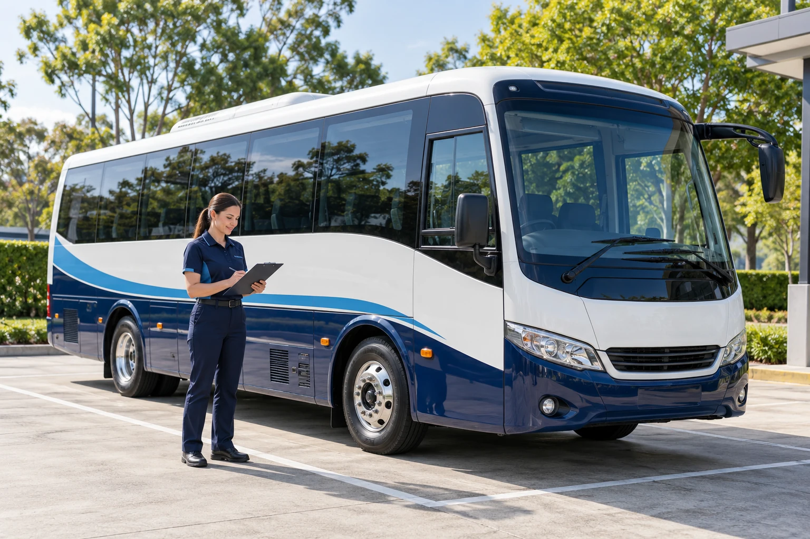

Before the first pickup
Confirm the route, authorised collectors and relevant travel support arrangements.
STUDENT SAFETY & SUPPORT
A considered approach to preparation, supervised boarding and clear collection arrangements—because every little detail matters.
Explore this service
BEFORE. DURING. AFTER.THE LITTLE DETAILS, IN FOCUS
A reassuring journey depends on practical preparation and clear responsibilities. Explore the proposed approach, then ask your school and operator how those arrangements are put into practice.
Confirm the route, authorised collectors and relevant travel support arrangements.
A considered boarding routine, seated travel and attentive handover coordination.
An agreed way to share changes, absences and important journey information.
A SIMPLE WAY TO GET STARTED
Start with the practical details and explore the options that work with your school-day routine.
Discuss meeting points, collectors and the correct contact channels.
Understand the boarding process and how the school or parent handover works.
Confirm any changes early through the school and operator’s verified channels.
FOR THE JOURNEY AHEAD
The school journey becomes part of a child’s everyday world. A familiar meeting point and a calm, considered routine can help that world feel more comfortable.
The real transport operator and school should confirm their staffing, checks, collection procedures and applicable requirements before enrolment. This site presents a service concept.
Use the operator or school’s verified contact channel before pickup. The dashboard absence planner in this build stores a local sample note only.
The Safety Policy page covers proposed vehicle readiness, supervised boarding, careful handover, communication and useful questions for parents.
THE NEXT LITTLE STEP
Explore the complete safety approach and the details to discuss before the first school run.
Read the safety policyA SHARED PLAN. A MORE REASSURING JOURNEY.